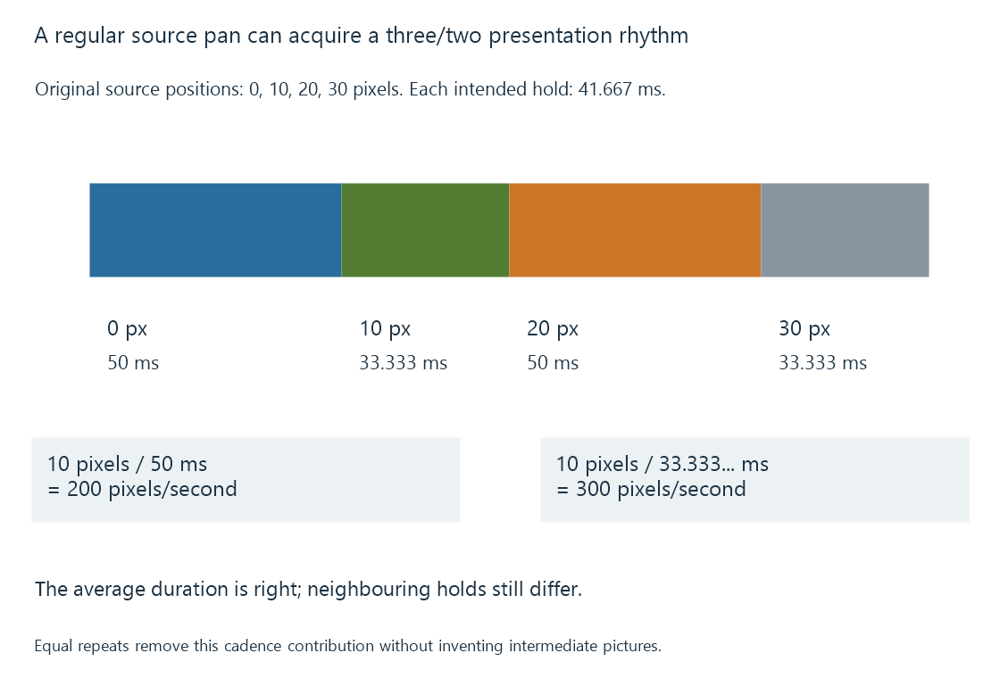

Judder and uneven picture cadence
Judder is perceived uneven movement associated with irregular picture presentation durations or cadence, distinct from pixel-transition blur.
A pan can look uneven even when all source pictures arrive and decode successfully. If neighbouring pictures remain on screen for different durations, movement advances with an irregular rhythm.
This cadence contribution is commonly described as judder.
Equal source steps, unequal display holds
Use an original film-motion exercise. An object moves ten picture pixels between each of four source pictures: positions 0, 10, 20 and 30.
At exact 24 fps, each intended source interval is 41.667 ms. On a fixed sixty-Hz grid, alternating three/two refresh holds give durations of 50 and 33.333 ms.
The apparent step rates associated with a ten-pixel advance become:
10 / 0.050 = 200 pixels/second
10 / 0.033333… = 300 pixels/second
The average fits the programme timing, but the neighbouring holds do not. A long steady pan can make the rhythm especially visible.

Using an exact 120-Hz grid with five refreshes per source picture gives equal 41.667-ms holds. Frame-rate matching develops this correction.
Removing unequal holds does not add temporal detail
An evenly presented 24-fps source still jumps between only twenty-four source samples per second. A fast or sharply exposed motion can look stepped even with perfect equal-duration playback.
A display can estimate intermediate pictures through motion interpolation. That changes the sequence and can introduce its own artifacts around occlusions or fine moving structures.
Repeating the source evenly preserves the original samples. Interpolating tries to create additional ones. They are different results.
Three similar-looking symptoms
| Observation | Relationship to investigate |
|---|---|
| Regular three/two rhythm during pans | Source/output cadence ratio |
| Long isolated hold or sudden jump | Late, missing or dropped picture; processing or delivery progress |
| Soft trail or blurred moving edge | Recorded motion blur, pixel transitions or display persistence |
A repeated presentation is not always an error. Repetition is necessary when an output refreshes more often than source pictures change. The issue is whether the resulting durations fit the intended cadence.
For an Emby comparison, preserve the same programme interval while identifying exact source rate, output mode and interpolation settings. That distinguishes a cadence change from a decoder or network problem.
A fast pixel response can make the discrete source steps clearer rather than eliminate them. It changes how quickly the display reaches each picture’s light values, not when the source created those pictures.
See Also
- Frame-rate matching at the display
- Display response time and motion blur
- Black-frame insertion and display persistence
- Dropped video frames during playback